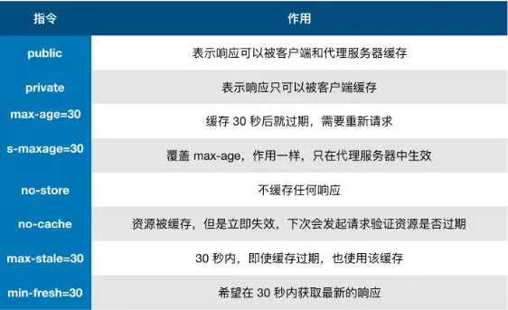

缓存可以说是性能优化中简单有效的方式了
对于一个请求来说,可简单分为三部分,发起网络请求,服务端处理,客户端响应,缓存主要对1,3部进行优化.比如直接使用缓存不发请求或请求了,但数据没变化,不用返回数据继续使用缓存.
当用户打开页面,缓存了一些静态资源文件,这时新版本发布,用户无法访问最新页面.
解决办法
浏览器和服务端通信是应答模式,即:浏览器发http请求,服务器响应请求.那么浏览器怎么知道缓存什么资源,怎么缓存呢?请求过程如下:
通过上图,我们了解到浏览器会根据标识判断缓存能否使用,那么缓存在哪里存放以及标识的具体规则是怎样的呢?
大致分为四种,并各有优先级,按浏览器查找缓存先后的优先级排序:
Service Worker 是运行在浏览器背后的独立线程，一般可以用来实现缓存功能。使用 Service Worker的话，传输协议必须为 HTTPS。因为 Service Worker 中涉及到请求拦截，所以必须使用 HTTPS 协议来保障安全。Service Worker 的缓存与浏览器其他内建的缓存机制不同，它可以让我们自由控制缓存哪些文件、如何匹配缓存、如何读取缓存，并且缓存是持续性的。
详见【浏览器缓存-Service Worker】
Memory Cache 也就是内存中的缓存，主要包含的是当前中页面中已经抓取到的资源,例如页面上已经下载的样式、脚本、图片等。读取内存中的数据肯定比磁盘快,内存缓存虽然读取高效，可是缓存持续性很短，会随着进程的释放而释放。 一旦我们关闭 Tab 页面，内存中的缓存也就被释放了.
内存缓存中有一块重要的缓存资源是preloader(预加载)相关指令（例如<link rel=”prefetch”>）下载的资源。preloader的相关指令已经是页面优化的常见手段之一，它可以一边解析js/css文件，一边网络请求下一个资源。
详见【关于预加载】
需要注意的是，内存缓存在缓存资源时并不关心返回资源的HTTP缓存头Cache-Control是什么值，同时资源的匹配也并非仅仅是对URL做匹配，还可能会对Content-Type，CORS等其他特征做校验。
Disk Cache 也就是存储在硬盘中的缓存，读取速度慢点，但是什么都能存储到磁盘中，比之 Memory Cache 胜在容量和存储时效性上。即使在跨站点的情况下，相同地址的资源一旦被硬盘缓存下来，就不会再次去请求数据。
关于这点，网上说法不一，不过以下观点比较靠得住：
关于push cache是怎么来的详见浅谈 HTTP/2 Server Push
Push Cache（推送缓存）是 HTTP2 中的内容，当以上三种缓存都没有命中时，它才会被使用。它只在会话（Session）中存在，一旦会话结束就被释放，并且缓存时间也很短暂，在Chrome浏览器中只有5分钟左右，同时它也并非严格执行HTTP头中的缓存指令。
如果以上四种缓存都没有命中的话，那么只能发起请求来获取资源了。
那么为了性能上的考虑，大部分的接口都应该选择好缓存策略，通常浏览器缓存策略分为两种：强缓存和协商缓存，并且缓存策略都是通过设置 HTTP Header 来实现的。缓存策略中将详细介绍缓存标识的具体规则.
启发式缓存：如果没有设置缓存策略，浏览器默认的缓存策略
我们根据是否需要向服务器重新发起HTTP请求将缓存过程分为两个部分，分别是强缓存和协商缓存。
其中强缓存优先于协商缓存,即强缓存命中则不会走协商缓存
不会向服务器发送请求，直接从缓存中读取资源，在控制台的Network中可以看到该请求返回200的状态码，并且Size显示from disk cache或from memory cache。
强缓存可以通过设置两种 HTTP Header 实现：
两者同时存在时,Cache-Control>>Expires

1 | Expires: Wed, 25 Sep 2019 08:13:53 GMT |
这个属性是 http1.0 里的，表示缓存里的文件在这个属性对应时间以后过期,即未过期之前将不必请求,直接取缓存数据.
Expires 是 HTTP1.0 的产物，受限于本地时间，如果修改了本地时间，可能会造成缓存失效。(多用于兼容ie浏览器,现代浏览器多用cache-control)
1 | Cache-Control: max-age=300 |
上述配置表示300秒内资源不会过期,可直接取缓存使用.
在HTTP1.1中，Cache-Control是最重要的规则，主要用于控制网页缓存。
Cache-Control 可以在请求头或者响应头中设置，并且可以组合使用多种指令：

public：所有内容都将被缓存（客户端和代理服务器都可缓存）。具体来说响应可被任何中间节点缓存，如 Browser <– proxy1 <– proxy2 <– Server，中间的proxy可以缓存资源，比如下次再请求同一资源proxy1直接把自己缓存的东西给 Browser 而不再向proxy2要。
private：所有内容只有客户端可以缓存，Cache-Control的默认取值。具体来说，表示中间节点不允许缓存，对于Browser <– proxy1 <– proxy2 <– Server，proxy 会老老实实把Server 返回的数据发送给proxy1,自己不缓存任何数据。当下次Browser再次请求时proxy会做好请求转发而不是自作主张给自己缓存的数据。
no-cache：客户端缓存内容，是否使用缓存则需要经过协商缓存来验证决定。表示不使用 Cache-Control的缓存控制方式做前置验证，而是使用 Etag 或者Last-Modified字段来控制缓存。需要注意的是，no-cache这个名字有一点误导。设置了no-cache之后，并不是说浏览器就不再缓存数据，只是浏览器在使用缓存数据时，需要先确认一下数据是否还跟服务器保持一致。
no-store：所有内容都不会被缓存，即不使用强制缓存，也不使用协商缓存
max-age：max-age=xxx (xxx is numeric)表示缓存内容将在xxx秒后失效
s-maxage（单位为s)：同max-age作用一样，只在代理服务器中生效（比如CDN缓存）。比如当s-maxage=60时，在这60秒中，即使更新了CDN的内容，浏览器也不会进行请求。max-age用于普通缓存，而s-maxage用于代理缓存。s-maxage的优先级高于max-age。如果存在s-maxage，则会覆盖掉max-age和Expires header。
max-stale：能容忍的最大过期时间。max-stale指令标示了客户端愿意接收一个已经过期了的响应。如果指定了max-stale的值，则最大容忍时间为对应的秒数。如果没有指定，那么说明浏览器愿意接收任何age的响应（age表示响应由源站生成或确认的时间与当前时间的差值）。
min-fresh：能够容忍的最小新鲜度。min-fresh标示了客户端不愿意接受新鲜度不多于当前的age加上min-fresh设定的时间之和的响应。

从图中我们可以看到，我们可以将多个指令配合起来一起使用，达到多个目的。比如说我们希望资源能被缓存下来，并且是客户端和代理服务器都能缓存，还能设置缓存失效时间等等。
强缓存判断是否缓存的依据来自于是否超出某个时间或者某个时间段，而不关心服务器端文件是否已经更新，这可能会导致加载文件不是服务器端最新的内容，那我们如何获知服务器端内容是否已经发生了更新呢？此时我们需要用到协商缓存策略。
协商缓存就是强制缓存未命中后，浏览器携带缓存标识向服务器发起请求，由服务器根据缓存标识决定是否使用缓存的过程，主要有以下两种情况：


协商缓存可以通过设置两种 HTTP Header 实现：Last-Modified 和 ETag 。
优先级ETag>>Last-Modified
response最后调整时间和requst是否来自最后调整时间
浏览器在第一次访问资源时，服务器返回资源的同时，在响应头response header中添加 Last-Modified的header，值是这个资源在服务器上的最后修改时间，浏览器接收后缓存文件和header；
1 | Last-Modified: Fri, 22 Jul 2016 01:47:00 GMT |
浏览器下一次请求这个资源，浏览器检测到有 Last-Modified这个header，于是添加If-Modified-Since到请求头resquest header，值就是Last-Modified中的值；服务器再次收到这个资源请求，会根据这个值与服务器中这个资源的最后修改时间对比，如果没有变化，返回304和空的响应体，直接从缓存读取，反之说明文件有更新，返回新的资源文件和200.
但是 Last-Modified 存在一些弊端：
Etag是服务器响应请求时，返回当前资源文件的一个唯一标识(由服务器生成)，只要资源有变化，Etag就会重新生成。浏览器在下一次加载资源向服务器发送请求时，会将上一次返回的Etag值放到request header里的If-None-Match里，服务器只需要比较客户端传来的值跟自己服务器上该资源的ETag是否一致，如果匹配不上，200+资源+新的ETag发给客户端；反之则直接返回304知会客户端直接使用本地缓存即可。
强制缓存优先于协商缓存进行，若强制缓存(Expires和Cache-Control)生效则直接使用缓存，若不生效则进行协商缓存(Last-Modified / If-Modified-Since和Etag / If-None-Match)，协商缓存由服务器决定是否使用缓存，若协商缓存失效，那么代表该请求的缓存失效，返回200，重新返回资源和缓存标识，再存入浏览器缓存中；生效则返回304，继续使用缓存。
浏览器会采用一个启发式的算法，通常会取响应头中的 Date 减去 Last-Modified 值的 10% 作为缓存时间。
1 | cache-control: no-cache |
1 | cache-control: max-age=31536000 |